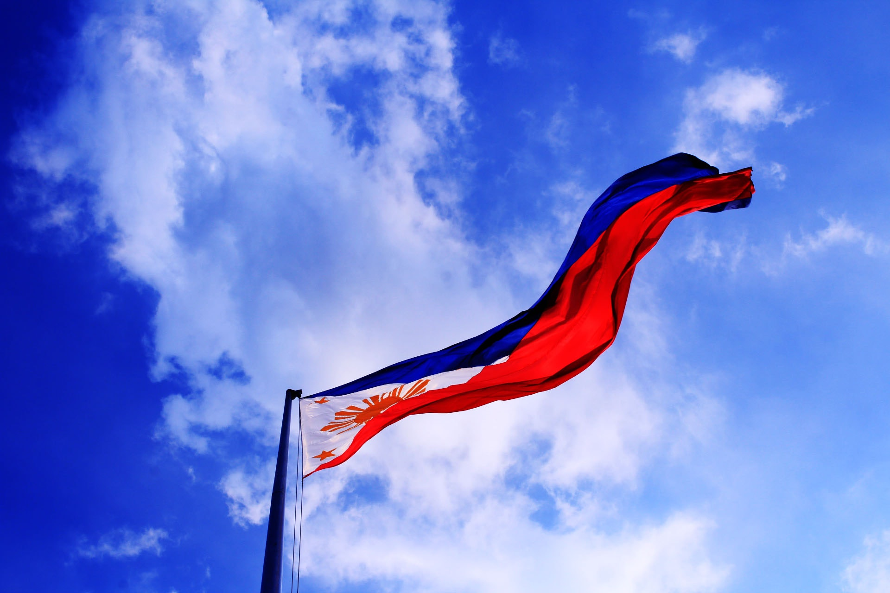

Date: June 12, 1898
Description Christmas Day, on December 25, is one of the most festive Christian holidays in many countries around the world. It celebrates Jesus' birth. It is time for children in many countries around the world to hang their Christmas stockings (or pillow cases), hoping for a present to arrive from Santa Claus on Christmas Day.
Philippine Independence Day, celebrated on June 12, commemorates the country's declaration of independence from Spanish rule in 1898. On this day, Filipinos honor their forefathers' courage and sacrifices with parades, flag-raising ceremonies, and patriotic events held across the nation. Festivities often include speeches and cultural presentations celebrating Filipino heritage and resilience. Many wear traditional attire like the Barong Tagalog and Filipiniana, and patriotic songs are played to rekindle national pride. It is a day for Filipinos to reflect on their history and express their love for their country, symbolized by the vibrant display of the Philippine flag.